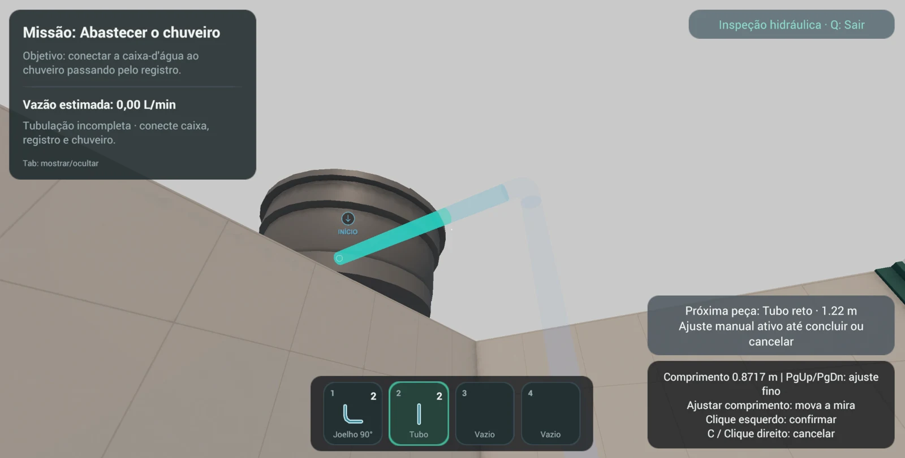
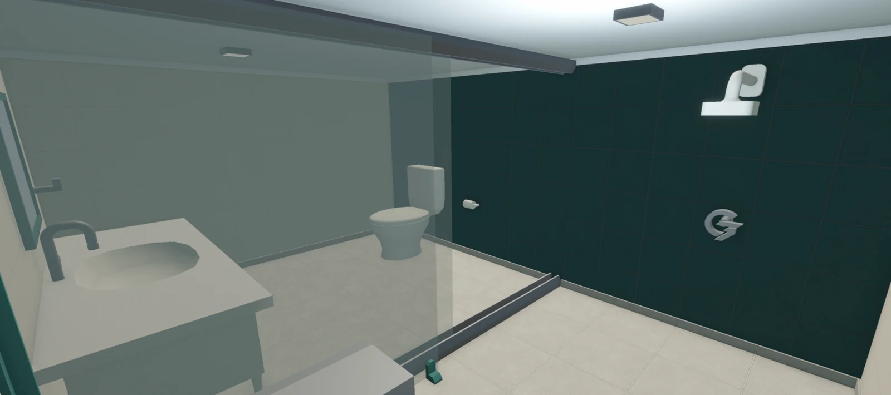
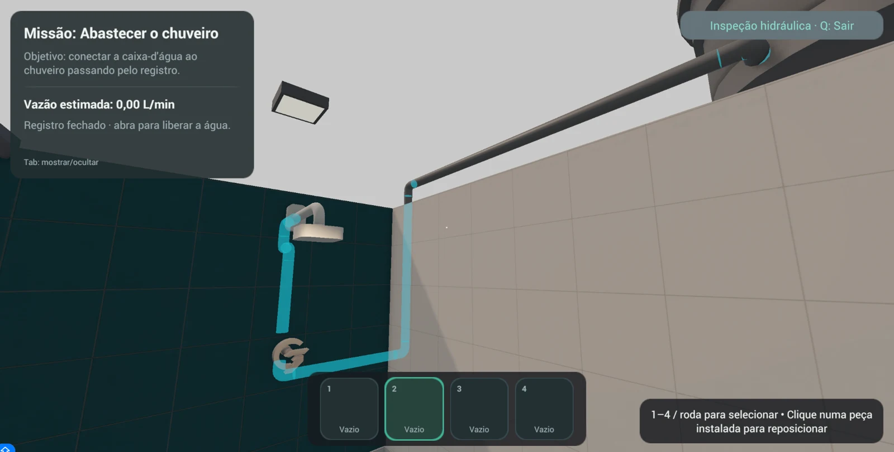
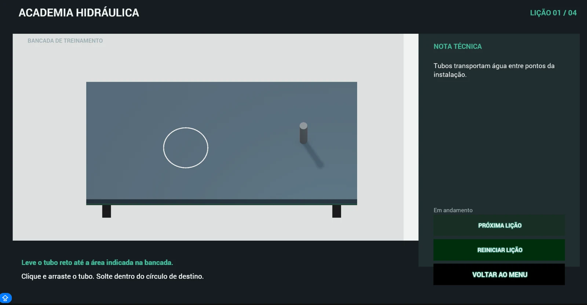

01 / CONSTRUA
Monte sua rede
Escolha tubos e conexões, ajuste comprimentos e rotações e experimente diferentes percursos.
SENAI • STARTUP CHALLENGE 2026
GAMIFICATIONALL MÓDULOPREDIAL
Domine os fundamentos das instalações hidráulicas em uma experiência 3D. Monte sua própria rede, descubra como a água flui e transforme teoria em prática.
Projeto educacional em desenvolvimento • PC / navegador

01 — A EXPERIÊNCIA
Conecte o reservatório ao chuveiro, ajuste as peças e observe o desempenho hidráulico da instalação.

Escolha tubos e conexões, ajuste comprimentos e rotações e experimente diferentes percursos.

Use o modo Raio X e acompanhe a vazão e as perdas de carga da rede simulada.

Quatro lições interativas e um guia adaptativo ajudam você a dominar a montagem.
Capturas de uma versão em desenvolvimento. A interface final pode mudar.
02 — GAMEPLAY
O vídeo oficial será gravado na versão final do jogo.
EM PRODUÇÃO03 — CIÊNCIA POR TRÁS DO JOGO
O modelo hidráulico utiliza Darcy–Weisbach e perdas localizadas para estimar o comportamento da água. Cada escolha de montagem pode alterar o resultado.
Simulação educativa: não substitui projetos hidráulicos profissionais nem medições reais.
04 — ACESSO AO JOGO
Escolha como deseja jogar quando a versão final estiver disponível.
Instale o jogo no seu computador.
↓ Download em breveAcesse a versão WebGL sem instalação, quando publicada.
▷ Em breveA versão final ainda não foi publicada.
05 — QUEM SOMOS
Uma equipe de estudantes do curso Técnico em Programação de Jogos Digitais do SENAI Mooca, criando experiências que aproximam educação e tecnologia.